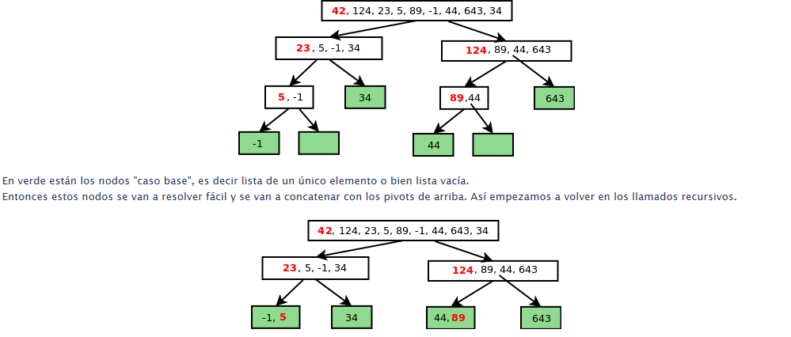
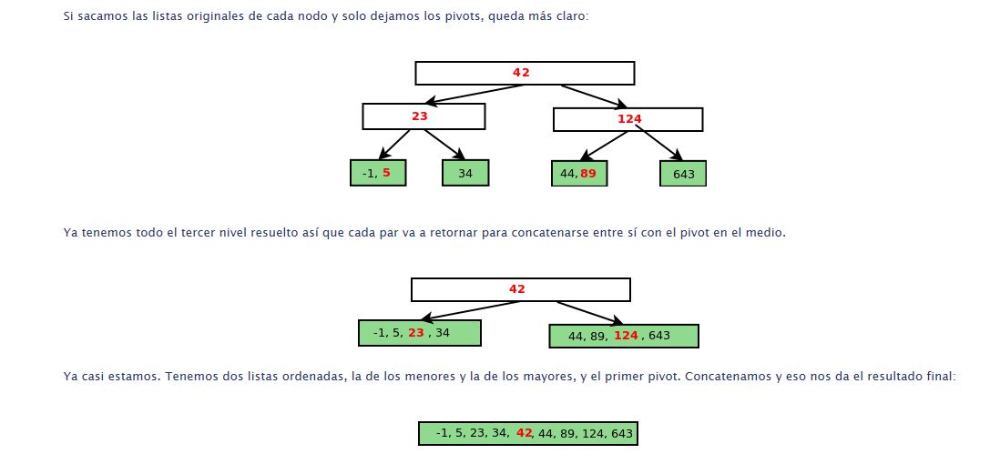

Éste algoritmo se basa en el principio de divide y conquistarás. Resulta más fácil ordenar listas pequeñas que una grande, con lo cual irá descomponiendo la lista en dos partes y ordenando esas partes.
Para ésto utiliza la recursividad.
Dada una lista, elegir uno de sus elementos, que llamamos pivot
Dividir la lista en dos sublistas:
una con los elementos "menores"
otra con los elementos "mayores"
Ordenar recursívamente ambas sublistas
Armar la lista resultado como: menoresOrdenados + pivot + mayoresOrdenados
Vamos a ver más adelante que la elección del pivot y el orden con el que venga ya de entrada la linea podrá afectar la eficiencia del algoritmo. En principio el algoritmo no especifica cómo elegir el pivot.


Análisis del Algoritmo El mergeSort tiene tiempo de ejecución dado por el orden O(n log(n)) Es decir que es bastante más rápido que el Algoritmo Bubbe Sort